A pioneer in art and design education since its founding in 1896, Parsons has cultivated outstanding artists, designers, scholars, businesspeople, and community leaders for more than a century. Today, when design thinking is increasingly being employed to solve complex global problems, Parsons is leading new approaches to art and design education.
At Parsons, a diverse community of students develops critical thinking skills and applies them to challenges ranging from environmental degradation to physical accessibility and humanitarian crises. Through a network of interconnected design laboratories, students explore global phenomena at multiple sites and scales of engagement, from on-campus research initiatives to partnerships that affect change in New York and around the world. Each undergraduate, associate, and graduate degree program at Parsons is housed in one of five schools. This organizational structure supports Parsons’ educational mission, and its interdisciplinary approach builds community among students and faculty in related disciplines.
arsons also offers open enrollment courses for nondegree students of all ages, in which you can build a portfolio or take art and design courses for credit or on a noncredit basis.
he New School holds a respected place among forward-thinking American Universities, attracting adventurous, creative, civic-minded scholars. A Parsons education combines the creative focus of an independent art and design school with the resources of The New School, a recognized liberal arts university. Both institutions have long been advocates of progressive thought and action, taking on urgent challenges facing society and preparing students to work in new and existing fields. Students complement their design and art education with courses in anthropology, public policy, business, media studies, the performing arts, and other disciplines, developing the capacity to work collaboratively across a range of projects and settings.
The New School is made up of seven divisions that offer undergraduate, associate, and graduate degrees and certificates in a number of disciplines.
Human imagination and endeavor are constantly remaking the world. As a species, we prod, bend, and transform the raw materials and energy flows of the planet into the objects, spaces, and places of everyday life. We are makers of cities, homes, buildings, and parks, cars, trains, planes, and bicycles. We develop technologies, tools, and networks that allow us to communicate across great distances and extend the capacity of our bodies to sense and comprehend the world around us. We are storytellers and explorers, by turns restless, rooted, innovative, cautious, atnd wildly creative. We define beauty, proportion, and aesthetics in ways that bring us together and drive us apart. Human beings are artists and designers capable of the most compassionate, farsighted, and joyful actions and of doing great harm. Design is not a neutral act.
Design enables human action. It is purposeful and magnifies capacity. It reveals and conceals who we are. And while design has played a role in every epoch of human history, it has never been more important than now. Today, communities around the world are confronted with new material, strategic, and interconnected challenges: food systems,fresh water resources, poverty, healthcare, energy efficiency, transportation infrastructure, and humanitarian aid, to mention just a few. Design alone will not solve these challenges but neither will they be adequately engaged without the creativity and strategic thinking of designers. We live in a designed world.
Design is emergent. In many critical ways, public awareness of design has never been greater. Design thinking is becoming highly regarded among business leaders and policymakers and it is increasingly understood as adding significant value because it frames problems and envisions solutions from a different perspective. As design evolves, it is as often concerned with conceiving and arranging complex systems as it is with creating beautiful and useful objects. Design is a generative and a regenerative endeavor with immediate impact and long-term implications. And the challenges of our time require more than ever that artists and designers focus their talents not simply on how things appear but on how things fundamentally are and, more to the point, how they could be. Here, a critical link between design, social science, and policy emerges, representing part of what distinguishes Parsons as a place to learn.
Parsons is organized into five schools—Art, Media, and Technology; Fashion; Constructed Environments; Art and Design History and Theory; and Design Strategies. This structure facilitates specialization in a given field while enabling interdisciplinary and cross-school scholarship that affords designers the broad design perspective they need in today’s professional world. Additionally, Parsons’ students benefit greatly from our integration within a research and liberal arts university, The New School. Our students can complement their design education with first-rate courses in anthropology, political science, public policy, music and drama, and many other disciplines, acquiring the capacity to work collaboratively across a wide range of projects and contexts.
The faculty and students at Parsons build critically engaged art and design practices. Whether they’re studying fine arts, fashion or photography, architecture, product or lighting design, illustration, interior or urban design, communication design or technology, integrated or transdisciplinary design, the design of business, the business of design, the core questions of the environment and sustainability or design itself, Parsons students and faculty continuously seek to advance art and design and renew their relevance in the world.
I strongly believe that it is an ideal time to study art and design and that Parsons provides a unique and deeply relevant context in which to do it. I hope you will join the talented, energetic, and creative students and faculty at Parsons. The future is always being designed. Come be part of it.
Joel Towers
Dean, Parsons The New School for Design
Parsons’ undergraduate programs offer rigorous art and design training within an environment of cross-disciplinary collaboration.
Architectual Design (BFA) Communication Design (BFA) Design and Technology(BFA) Environmental Studies (BS) Fashion Design (BFA) Fine Arts (BFA) Illustration (BFA) Integrated Design (BFA) Interior Design (BFA) Photography (BFA) Product Design (BFA) Strategic Design and Management (BBA) Urban Design (BS)
Parsons' first-year course of study* immerses you in an exploration of art and design concepts, skills, and critical practices, training you to become flexible thinkers, strong makers, and lifelong learners. The curriculum offers a survey of approaches to art and design that prepare you for the undergraduate majors at Parsons and enable you to envision paths beyond the confines of a single discipline.
First year is a common experience for all incoming Parsons students, with the same set of course requirements for students in all BFA programs. You will be able to shape their path of study within those requirements, selecting from the various options available for many of the required courses. BBA students at Parsons follow a similar curriculum, with a few exceptions specific to their programs, and share many courses with BFA students.
After completing freshman-year coursework, students work with advisors, in consultation with instructors, to define their goals and choose the appropriate degree program.
Students entering Parsons prior to Fall 2013 take their first-year courses through the Foundation program.
All undergraduate programs include a strong liberal arts component, including courses in art and design history and theory, that provide a context for studio practice. And because Parsons is part of The New School, you can choose from a wide range of lecture courses and electives in humanities, social sciences, media studies, and business. Parsons also offers a dual BA/BFA degree in which you can combine a BFA from Parsons with a BA from Eugene Lang College The New School for Liberal Arts.
Art and design professionals in the 21st century must navigate a fluid and networked global culture. Parsons prepares its graduates for this rapidly evolving world by offering a range of cross- disciplinary graduate programs that place advanced studio practice and research at their center.
Architecture (M.arch) Architecture (M.Arch) / Lighting Design (MFA) dual degree Design Business (Graduate Certificate) Design and Technology (MFA) Design and Urban Ecologies (MS) Design Studies (MA) Fashion Design and Society (MFA) Fashion Studies (MA) Fine Arts (MFA) History of Decorative Arts and Design (MA) Interior Design (MFA) Lighting Design (MFA) Photography (MFA) Strategic Design and Management (MS) Theories of Urban Practice (MA) Transdisciplinary Design (MFA)
Students are part of a select yet diverse community of independent thinkers. More than 500 graduate students attend programs ranging in size from 12 to 175 enrollees. All students enjoy intimate seminar and studio classes, and work closely with faculty to plan self-designed and flexible programs.
A network of experimental design laboratories and research institutes allow students to collaborate with faculty and peers from Parsons and other New School graduate programs, connect with external partners, and explore unique learning opportunities outside of the classroom. Visit Research and Projects to learn more about the range of opportunities for art and design research at the school.
For the professional prepared to make the leap into design, Parsons offers Associate in Applied Science (AAS) degrees in Fashion Design, Fashion Marketing, Graphic Design, and Interior Design.
Fashion Design Fashion Marketing Graphic Design Interior Design
The AAS programs are best suited to students with college experience who are clear about their interests in the field of design and prepared for rapid immersion in a professional course of study. Our students enter the school as experienced attorneys, bankers, teachers, stockbrokers, and chefs. When they graduate from Parsons, they are merchandisers, fashion designers, graphic artists, and interior designers versed in the language, process, and technology of their new fields. They are also highly sought-after talents on the job market: In a recent survey of AAS graduates, 96 percent of survey respondents had found work related to their major.
Qualified applicants who wish to complete their design training in a short time can apply to the Fast Track program, which enables students to earn an AAS degree with 34 credits in a single academic year (fall and spring semesters). Students may also study part time, and earn their degree over several years. For further flexibility, some AAS courses are offered online as well as on campus.
The entire AAS Fashion Marketing and AAS Graphic Design degrees can be completed online from anywhere.
Our Summer Intensive Studies programs, offered in New York and Paris, are boot camps in art and design. Whether you're a high school student looking to build your portfolio, a college student interested in enhancing your current degree studies, or an adult investigating career options, our summer programs will help you define and achieve your future goals. Courses are offered at pre-college and college/adult levels, for two- and four-week-long sessions.
This intensive four-week, four-credit program is open to all students (16 years of age or older) who wish to deepen their knowledge of art and design in an academically rigorous and artistically stimulating environment. Students spend five full days a week in studio classes complemented by demanding homework assignments. Courses are taught by Parsons faculty and New York-based artists and designers. Coursework is supplemented with events including portfolio reviews, alumni career panels, and industry guest lecturers that prepare students for admission to degree programs or enable them to further explore career paths. Summer Intensive Studies students may live in New School residence halls convenient to the Parsons Village campus. To register or for more information, visit www.newschool.edu/parsons/summer-ny/
The Summer Intensive Studies: Paris program allows you to experience this vibrant city from an insider's perspective by exploring the history of European art and design first-hand. Offered in two- or four- week sessions, the program is open to all students (16 years of age or older) who wish to deepen their art and design knowledge and skills in a rigorous academic environment. Students attend classes Monday through Friday for six hours per day. Classes meet at sites ranging from art and design exhibitions to architectural landmarks and parks throughout the city. Coursework is complemented by weekend excursions and day trips in and around Paris. Housing through Parsons is available for students enrolled in the four-week Pre-College program. To register or for more information, visit www.newschool.edu/parsons/summer-paris/
Open to all current college students and college graduates, the five-week Summer Studies in Constructed Environments program adheres to the same exacting standards as other offerings in Summer Intensive Studies. Focusing on architecture, interior design, and lighting design, this 4-credit studio-based curriculum is designed to prepare applicants for admission to professional degree programs (MArch, MFA in Interior Design, or MFA in Lighting Design) at Parsons and other competitive graduate schools. Coursework covers design, drawing, digital representation and computer skills, architectural analysis, design history, and theory. To register or for more information, visit www.newschool.edu/parsons/summer-studies-in-constructed-environments/
The Masters Program in the History of Decorative Arts operates a two-week Graduate International Summer Program in London. In addition, the Bank Street College of Education in New York City and Parsons offer a joint three-summer Leadership in the Arts graduate degree program for arts educators that leads to a Masters of Science in Education. To register or for more information, visitwww.newschool.edu/parsons/summer-programs/